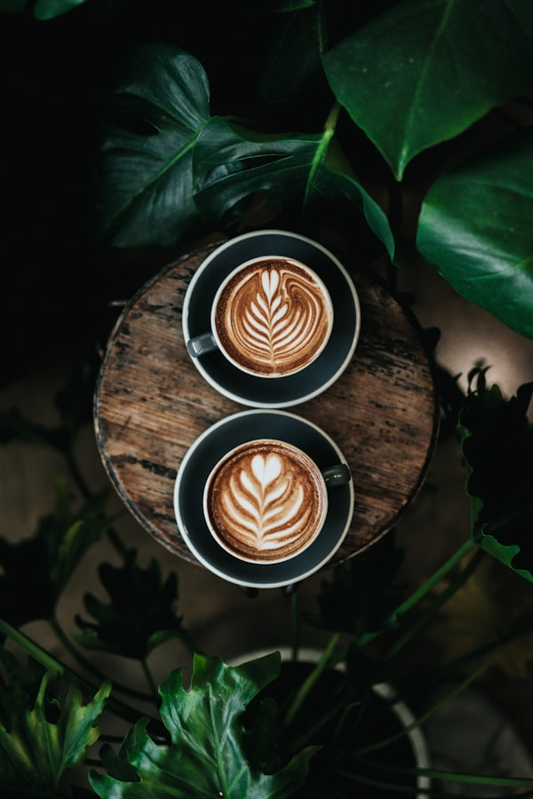
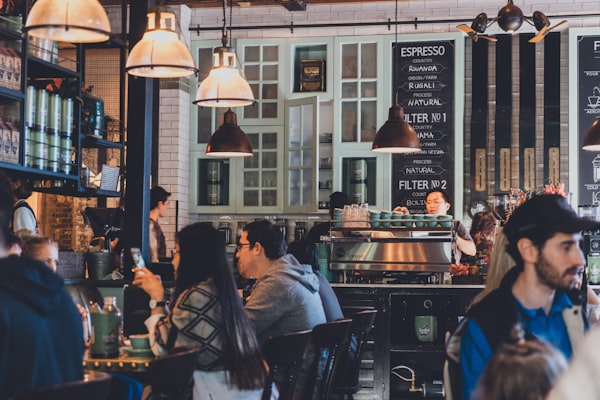

Quầy Bar Gỗ Mộc Mạc
Nơi bạn có thể ngồi trò chuyện cùng các barista thân thiện và chiêm ngưỡng toàn bộ quy trình pha chế cà phê điêu luyện.

Hương vị nguyên bản • Không gian kết nối
Mỗi khu vực tại quán được bài trí tỉ mỉ để phục vụ nhu cầu đa dạng: làm việc tập trung, chuyện trò rôm rả hay tìm một thoáng tĩnh lặng cho riêng mình.
Nơi bạn có thể ngồi trò chuyện cùng các barista thân thiện và chiêm ngưỡng toàn bộ quy trình pha chế cà phê điêu luyện.

Góc ngồi lý tưởng đón gió trời tự nhiên và ánh nắng sớm mai, ngắm nhìn dòng người qua lại nhẹ nhàng bên ly cà phê thơm.

Không gian yên tĩnh được trang bị bàn dài, ghế ngồi êm ái, đầy đủ ổ cắm điện và wifi tốc độ cao cho các bạn làm việc, học tập.

Tách biệt khỏi khói bụi thành phố, góc sân vườn ngập tràn bóng mát cây cối và hoa lá tươi tắn đem lại cảm giác trong lành, sảng khoái.

Dành riêng cho những người đam mê cà phê specialty muốn thưởng thức hương vị nguyên bản qua bình Pour-over V60 và Cold Brew.

Vào mỗi tối cuối tuần, quán khoác lên mình vẻ đẹp lung linh dưới ánh đèn vàng dịu nhẹ cùng những giai điệu guitar mộc êm ái.